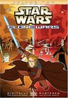

What is this site?
Stephen's Profile
Browser Extension
Stephen Klancher
Recent
Overall
Year Overview
Series
Lists
Star Wars: Clone Wars
List contains: 25 items, 27.1 hours.
Seasons:
1
|
2
|
3
|
Title Search (4+ characters):
Group:
None
Example Group: Me and Stephen
Who's seen it:
No filter
Everyone
No One
Anyone
Anyone Has Not
Who's commented:
No filter
Everyone
No One
Anyone
Anyone Has Not
Netflix:
No Filter
Available for Instant Watch
Netflix Link Known
Netflix Link Unknown
Missing Data:
No Filter
Runtime
Season
Release Year (YYYY) or Decade (YYYx):
Sort:
Normal
Newest Episodes First
Episodes in Order
Recently Watched First
Watched in Order
Newest Releases First
Releases in Order
Stephen Klancher
...has seen 25
...has seen 27.1 hours
Timeline
Most Recent:
Chapter 1

Season 1
Chapter 1 (2003)
Airs on 2003-11-07
S1 - E1 of
Star Wars: Clone Wars
Stephen Klancher
: SEEN
Chapter 2 (2003)
Airs on 2003-11-10
S1 - E2 of
Star Wars: Clone Wars
Stephen Klancher
: SEEN
Chapter 3 (2003)
Airs on 2003-11-11
S1 - E3 of
Star Wars: Clone Wars
Stephen Klancher
: SEEN
Chapter 4 (2003)
Airs on 2003-11-12
S1 - E4 of
Star Wars: Clone Wars
Stephen Klancher
: SEEN
Chapter 5 (2003)
Airs on 2003-11-13
S1 - E5 of
Star Wars: Clone Wars
Stephen Klancher
: SEEN
Chapter 6 (2003)
Airs on 2003-11-14
S1 - E6 of
Star Wars: Clone Wars
Stephen Klancher
: SEEN
Chapter 7 (2003)
Airs on 2003-11-17
S1 - E7 of
Star Wars: Clone Wars
Stephen Klancher
: SEEN
Chapter 8 (2003)
Airs on 2003-11-18
S1 - E8 of
Star Wars: Clone Wars
Stephen Klancher
: SEEN
Chapter 9 (2003)
Airs on 2003-11-19
S1 - E9 of
Star Wars: Clone Wars
Stephen Klancher
: SEEN
Chapter 10 (2003)
Airs on 2003-11-20
S1 - E10 of
Star Wars: Clone Wars
Stephen Klancher
: SEEN
Season 2
Chapter 11 (2004)
Airs on 2004-03-26
S2 - E1 of
Star Wars: Clone Wars
Stephen Klancher
: SEEN
Chapter 12 (2004)
Airs on 2004-03-29
S2 - E2 of
Star Wars: Clone Wars
Stephen Klancher
: SEEN
Chapter 13 (2004)
Airs on 2004-03-30
S2 - E3 of
Star Wars: Clone Wars
Stephen Klancher
: SEEN
Chapter 14 (2004)
Airs on 2004-03-31
S2 - E4 of
Star Wars: Clone Wars
Stephen Klancher
: SEEN
Chapter 15 (2004)
Airs on 2004-04-01
S2 - E5 of
Star Wars: Clone Wars
Stephen Klancher
: SEEN
Chapter 16 (2004)
Airs on 2004-04-02
S2 - E6 of
Star Wars: Clone Wars
Stephen Klancher
: SEEN
Chapter 17 (2004)
Airs on 2004-04-05
S2 - E7 of
Star Wars: Clone Wars
Stephen Klancher
: SEEN
Chapter 18 (2004)
Airs on 2004-04-06
S2 - E8 of
Star Wars: Clone Wars
Stephen Klancher
: SEEN
Chapter 19 (2004)
Airs on 2004-04-07
S2 - E9 of
Star Wars: Clone Wars
Stephen Klancher
: SEEN
Chapter 20 (2004)
Airs on 2004-04-08
S2 - E10 of
Star Wars: Clone Wars
Stephen Klancher
: SEEN
Season 3
Chapter 21 (2005)
Airs on 2005-03-21
S3 - E1 of
Star Wars: Clone Wars
Stephen Klancher
: SEEN
Chapter 22 (2005)
Airs on 2005-03-22
S3 - E2 of
Star Wars: Clone Wars
Stephen Klancher
: SEEN
Chapter 23 (2005)
Airs on 2005-03-23
S3 - E3 of
Star Wars: Clone Wars
Stephen Klancher
: SEEN
Chapter 24 (2005)
Airs on 2005-03-24
S3 - E4 of
Star Wars: Clone Wars
Stephen Klancher
: SEEN
Chapter 25 (2005)
Airs on 2005-03-25
S3 - E5 of
Star Wars: Clone Wars
Stephen Klancher
: SEEN
Watched an episode not known by IMDb?
Season:
-
Episode:
Date:
Comment: